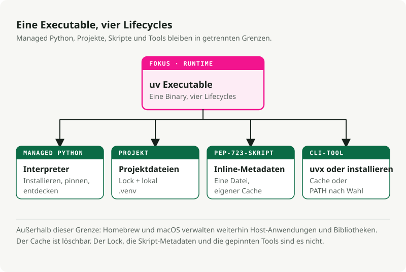
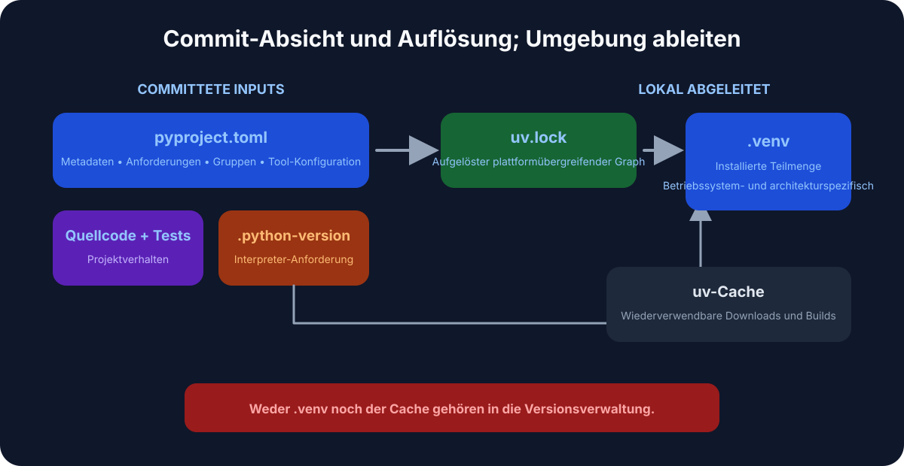
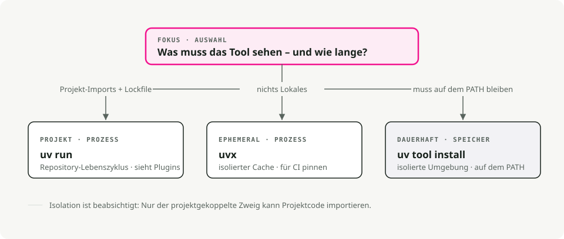
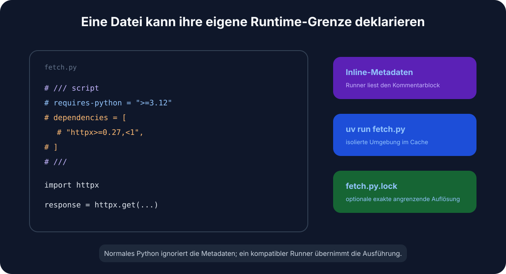

Automatische Übersetzung
Dieser Artikel wurde automatisch aus der englischen Originalversion übersetzt.
UV unter macOS: Verwaltung von Python-Versionen, Projekten und Tools
Schneller Einstieg
# Install uv
brew install uv
# For new projects (modern workflow)
uv init # create project structure
uv add pandas numpy # add dependencies
uv run train.py # run your script
# For existing projects (legacy workflow)
uv venv # create virtual environment
uv pip install -r requirements.txt # install dependencies
uv run train.py # run your script
# Run tools without installing them
uvx ruff check . # run linter
uvx black . # run formatter
# Run a single-file script with its own dependencies (no project needed)
uv run fetch.py # uv reads the inline deps and runs it
Zusammenfassung: Verwenden Sie uv als Standard-Python-Projekt- und Tool-Manager unter macOS. Behalten Sie Homebrew für Systempakete bei und installieren Sie Python-Versionen über uv python, Abhängigkeiten festpinnen in pyproject.toml, und wenden Sie es an uvx für einmalige CLI-Tools.
Warum uv für Python unter macOS verwenden?
Wenn Sie bereits eine Weile Python verwenden, haben Sie vermutlich schon mit verschiedenen Aufgaben gleichzeitig zu tun. pip, virtualenv, pip-tools, pyenv, und poetry je nach Projekt. uv Es erfüllt genau dieselben Funktionen wie all die anderen Tools – und das mit nur einem Binärdatei.
Es ist in Rust geschrieben, und auf meinem Rechner installiert es Pakete etwa 10–100 Mal schneller als der alte Stack. Der größte Vorteil für mich ist, dass ich nicht mehr mitten in einer Aufgabe zwischen verschiedenen Tools wechseln muss.

Es ersetzt pip und pip-tools für die Paketverwaltung, pyenv zur Installation von Python-Versionen, virtualenv/venv für Umgebungen, pipx zur Ausführung von Tools, und poetry oder pdm für Projektworkflows.
Installation von uv
Die einfachste Methode zur Installation uv Unter macOS erfolgt die Installation über Homebrew:
brew install uv
uv erkennt automatisch die Architektur Ihres Macs (Apple Silicon oder Intel), sodass keine zusätzliche Konfiguration erforderlich ist.
Um ihn auf dem neuesten Stand zu halten:
brew upgrade uv
# OR
uv self update
Kernkonzepte
uv umfasst drei Anwendungsfälle:
- Projekte – Erstellung einer Anwendung oder Bibliothek mit Abhängigkeiten.
- Skripte – Ausführung eines einzeiligen Python-Skripts mit eingebetteten Abhängigkeiten.
- Werkzeuge – Ausführung von Kommandozeilen-Utilities (wie
ruffoderhttpie) global.
1. Projektmanagement
Für neue Projekte, uv verwendet den Standard pyproject.toml für die Konfiguration und plattformübergreifende Nutzung uv.lock für reproduzierbare Builds.

Ein neues Projekt starten:
uv init my-project
cd my-project
Dies erzeugt eine pyproject.toml, ein .gitignore, und ein hello.pyAbhängigkeiten hinzufügen:
# Runtime dependencies
uv add pandas requests
# Development dependencies
uv add pytest ruff --dev
Führen Sie Ihren Code aus:
uv run hello.py
uv verwaltet die virtuelle Umgebung in .venv für Sie. Sie müssen es nicht manuell aktivieren.
2. Verwaltung von Python-Versionen
uv installiert und verwaltet die Python-Versionen für Sie – diese werden dabei gespeichert. ~/.cache/uv. Wenn Sie bereits damit arbeiten pyenv Dafür können Sie es einfach weglassen.
Eine spezifische Version installieren:
uv python install 3.12
Eine Version für Ihr Projekt festlegen:
uv python pin 3.11
Dies schreibt eine .python-version Datei. Im nächsten Schritt uv run, es verwendet die gepinnte Version und lädt sie bei Bedarf herunter. Ihr Team sowie der CI arbeiten somit mit derselben Python-Version – ohne zusätzliche Koordination erforderlich.
3. Ausführung von Tools mit uvx und uv tool install
uvx (ein Alias für) uv tool run) führt Python-Command-Line-Tools aus, ohne sie in die globale Umgebung oder die Projektabhängigkeiten aufzunehmen.
# Run a linter
uvx ruff check .
# Run a formatter
uvx black .
# Start a temporary Jupyter server
uvx --from jupyterlab jupyter lab
Jedes Tool läuft in seiner eigenen temporären Umgebung, wodurch es zu keinen Versionskonflikten mit den bereits im Projekt installierten Komponenten kommt.

Zwei Aspekte, auf die ich ständig zurückgreife:
- Die Version inline festpinnen mit
@:uvx ruff@0.6.0 check ., oder den neuesten mit Gewalt verwendenuvx ruff@latest. - Passt der Befehlssname nicht zum Paket? Verwenden Sie
--from. Das PaketjupyterlabversendetjupyterBefehl, daher ist esuvx --from jupyterlab jupyter lab. Dasselbe gilt für--from httpie http. - Benötigen Sie eine zusätzliche Abhängigkeit für ein Plugin? Fügen Sie sie hinzu mit
--with:uvx --with mkdocs-material mkdocs serveWenn Sie ein Tool täglich verwenden, installieren Sie es einmalig, anstatt jedes Mal eine neue Umgebung zu erstellen:
uv tool install ruff # now `ruff` is on your PATH
uv tool list # see what's installed
uv tool upgrade --all # update everything
uv tool uninstall ruff
Die Faustregel: uvx für einmalige oder CI-Ausführungen, uv tool install für Ihre täglichen Arbeitswerkzeuge.
Legacy-Projekte (requirements.txt)
requirements.txt Es hat eine Weile gut funktioniert. Es handelt sich dabei um eine einfache Liste von Paketen ohne Lockfile, ohne Trennung zwischen Anwendungs- und Entwicklungsabhängigkeiten sowie ohne Aufzeichnung darüber, warum bestimmte Versionen festgelegt wurden. Das ist in Ordnung – bis man versucht, einen Build aus acht Monaten zuvor nachzubilden und feststellt, dass unter „festgelegt“ einfach die Version gemeint ist, die zu diesem Zeitpunkt von PyPI bereitgestellt wurde.
Falls Sie das Projekt besitzen, migrieren Sie es. uv liest Ihre vorhandene Liste direkt in ein pyproject.toml:
uv init --bare # minimal pyproject.toml, no scaffolding
uv add -r requirements.txt # import runtime dependencies
uv add --dev -r requirements-dev.txt # and dev ones, if you split them
Sie verfügen nun über einen pyproject.toml und ein echter uv.lock diese Einstellung fixiert die genauen, gelösten Versionen. Überprüfen Sie, ob alles ordnungsgemäß übertragen wurde. uv pip freeze, löschen Sie den alten requirements.txtund schauen Sie nicht zurück.
Aber vielleicht führen Sie bereits denselben requirements.txt Seit Python 3.6 – und Sie sind offensichtlich nicht an meiner Meinung dazu interessiert. In Ordnung. uv bleibt weiterhin als direkter Ersatz funktionsfähig pip und venv, keine Migration erforderlich:
# Create a virtual environment
uv venv
# Install dependencies
uv pip install -r requirements.txt
# Run it
uv run python app.py
Die gleichen Befehle, die Sie bereits kennen – nur schneller. Der alte Workflow wird dadurch nicht schlechter; Sie müssen ihn lediglich nicht mehr verwenden.
Einzeldatei-Skripte mit eingebetteten Abhängigkeiten
Dies ist die Funktion, die meine Vorgehensweise bei der Erstellung von temporärem und zusammengefügtem Code verändert hat. Ein Python-Skript kann seine eigenen Abhängigkeiten direkt innerhalb der Datei in einem durch Kommentare definierten Block angeben. PEP 723. Nein. pyproject.toml, nein requirements.txt, kein virtuelles Umfeld zur Erstellung vorhanden — uv run liest den Block ein, erstellt eine gecachte Umgebung und führt die Datei aus.
Es ist sinnvoll, klarzustellen, was hier die Arbeit übernimmt: Es handelt sich weder um eine Eigenschaft der Python-Sprache noch um … uv Erfindung. Der Block ist lediglich ein Kommentar, daher im einfachen Textformat. python fetch.py ignoriert dies und scheitert an den fehlenden Imports. PEP 723 ist ein gemeinsamer Standard, sodass jeder kompatible Ausführer denselben Block liest — pipx runHatch und PDM unterstützen es ebenfalls. uv ist zufällig die schnellste Methode, um es zu nutzen, weshalb der Rest dieses Abschnitts diese Vorgehensweise verwendet uv run.

Hier ist der gesamte Inhalt in einer einzigen Datei. fetch.py:
# /// script
# requires-python = ">=3.12"
# dependencies = [
# "httpx",
# "rich",
# ]
# ///
import httpx
from rich import print
print(httpx.get("https://api.github.com/repos/astral-sh/uv").json())
Führen Sie es aus:
uv run fetch.py
Der erste Ausführungsvorgang löst das Problem und führt die Installation durch. httpx und rich in eine gecachte Umgebung; spätere Ausführungen wenden sie erneut an und starten sofort.
Sie müssen den Metadatenblock nicht manuell eingeben. uv Ich werde ein Scaffold erstellen und es für Sie bearbeiten:
# Create a new script with the block pre-filled
uv init --script fetch.py --python 3.12
# Add or remove dependencies
uv add --script fetch.py httpx rich
uv remove --script fetch.py rich
Für ein schnelles Experiment können Sie den Block sogar ganz überspringen und die Abhängigkeiten über die Kommandozeile übergeben:
uv run --with httpx --with rich fetch.py
Warum das ideal für Skill- und Automatisierungs-Skripte ist
Ich nutze dieses Werkzeug für die kleinen Skripte, die keine eigene Projektstruktur benötigen: einmalige Datenkorrekturen, Hilfsprogramme für CI-Prozesse usw. „Claude Code“-Fähigkeit Skript, eine Cron-Aufgabe. Das Skript ist die Einheit. Sie können es in einen Gist hochladen, in ein beliebiges Repository einchecken oder es an einen Teamkollegen weitergeben. uv run das ist das Einzige, was sie benötigen, um es korrekt auszuführen.
Machen Sie es mit einem Shebang direkt ausführbar:
#!/usr/bin/env -S uv run --script
# /// script
# dependencies = ["httpx"]
# ///
import httpx
...
chmod +x fetch.py
./fetch.py # uv handles the environment behind the scenes
The -S splittet den Shebang in separate Argumente auf, sodass env bestanden --script bis hin zu uv### Sperren und Fixieren von Skripten
Für Skripte, die auch Monate später weiterhin funktionieren müssen, stehen Ihnen zwei Optionen zur Verfügung.
Sperren Sie die genaue Auflösung neben dem Skript:
uv lock --script fetch.py # writes fetch.py.lock
oder fixieren Sie einen Zeitpunkt. uv Berücksichtigt ausschließlich Pakete, die vor einem bestimmten Datum veröffentlicht wurden – praktisch zur Gewährleistung der Wiederholbarkeit ohne Lockfile:
# /// script
# dependencies = ["httpx"]
# [tool.uv]
# exclude-newer = "2025-04-17T00:00:00Z"
# ///
Tipps und Tricks, die man kennen sollte
Einige weitere Werkzeuge, die ich regelmäßig verwende und die im Schnellstart nicht sofort offensichtlich sind.
Synchronisierung aus der Lockdatei in CI. uv sync installiert genau das, was enthalten ist uv.lock. Fügen Sie hinzu. --frozen damit es laut fehlschlägt, falls die Lockdatei veraltet ist, anstatt sie stumm erneut auflösen zu lassen – genau das, was man in CI- und Docker-Builds benötigt.
uv sync --frozen
Gruppieren Sie Ihre Entwicklungskomponenten. Darüber hinaus --dev, Sie können benannte Abhängigkeitsgruppen definieren in pyproject.toml (docs, lint, test) und synchronisieren Sie nur das, was Sie benötigen:
uv add --group docs mkdocs-material
uv sync --only-group docs
Prüfen Sie den Abhängigkeitsbaum. uv tree zeigt an, was welches heruntergeladen hat – und --outdated Flags-Updates:
uv tree
uv tree --outdated
Exportieren in requirements.txt, falls ein nachgeschaltetes Tool diesennoch erwartet:
uv export --format requirements-txt > requirements.txt
Einen einmaligen Python-Aufruf mit zusätzlichen Paketen ausführen, kein Projekt erforderlich:
uv run --with pandas --with matplotlib python
Verwalten Sie den Cache, wenn der Festplattenspeicher knapp wird oder ein Build fehlschlägt:
uv cache clean # wipe the whole cache
uv cache prune # remove only unused entries
Warum es schnell ist
Drei Faktoren sind hier entscheidend. Es ist in Rust geschrieben, wodurch bei jeder Aufrufung keine Python-Startkosten anfallen. Zudem werden die erstellten Binärpakete global gekacht – einmalig numpy wird in einem Projekt installiert; seine Installation in einem anderen Projekt ist im Grunde genommen sofort abgeschlossen (unter macOS werden dabei Kopier-beim-Schreiben-Verknüpfungen verwendet). Zudem werden Pakete parallel heruntergeladen und installiert, anstatt nacheinander.
Zusammenfassung
| Aufgabe | Alte Methode | Der UV-Weg |
|---|---|---|
| Python installieren | pyenv install 3.12 |
uv python install 3.12 |
| Neues Projekt | mkdir proj && cd proj && python -m venv .venv |
uv init proj |
| Paket installieren | pip install pandas && pip freeze > requirements.txt |
uv add pandas |
| Skript ausführen | source .venv/bin/activate && python script.py |
uv run script.py |
| Skript + Abhängigkeiten | ein Projekt oder eine manuell erstellte venv nur für eine Datei | inline PEP 723-Block + uv run |
| Tool einmal ausführen | pipx run black |
uvx black |
| Ein Tool installieren | pipx install ruff |
uv tool install ruff |
| Wiederholbare CI-Pipelines | pip install -r requirements.txt |
uv sync --frozen |
Ich habe meinen Python-Arbeitsablauf umgestellt auf uv kurz nach seinem Erscheinen und seitdem nicht mehr weggegangen. Falls Sie noch auf dem alten Stack arbeiten, probieren Sie es doch in Ihrem nächsten Projekt aus – so habe ich es selbst getestet, bevor ich alles umgestellt habe.
Wichtige Erkenntnisse
- Verwenden
uvfür Python-Versionen, virtuelle Umgebungen, Projektabhängigkeiten sowie einmalige Tools – anstelle der Kombination mehrerer Paketmanager. - Lassen Sie Homebrew weiterhin für Systempakete zuständig sein, nicht für die Isolierung von Python-Projekten.
- Commitnen
pyproject.tomlunduv.lockdamit die Projektkonfiguration auf einem neuen Rechner reproduzierbar ist. - Vorzugsweise
uvxfür gelegentliche CLI-Nutzungen, wenn man keine globale Umgebung verschmutzen möchte.
Referenzen
- UV-Dokumentation - Verwaltung von Paketen, Projekten und Python-Versionen. Benutzerhandbuch für das Python-Paketieren - aktuelle Verpackungsstandards und -Terminologie. Homebrew-Dokumentation - Systempaketverwaltung unter macOS.